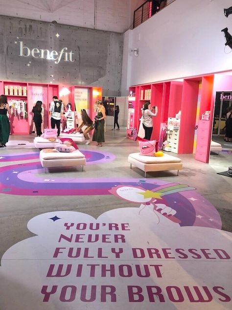

HELLO, I'M PRUNE

Dans le cadre de ma quatrième année d’école de commerce à Essec Business school, je suis à la recherche d’une alternance d’une durée de 16 mois à partir de septembre 2023, dans le domaine du marketing, de la communication ou de l’événementielle. Etant dynamique, créative et rigoureuse, avec une forte attention au détail, je serai ravie d’intégrer vos équipes et travailler à vos côtés.
Mon CVMODE

Je porte un intérêt majeur pour la mode. En effet, c'est un excellent moyen de s'exprimer et de montrer sa personnalité, en permettant de se sentir plus confiant et de se présenter au monde de manière positive. Pour beaucoup la mode est synonyme de source de joie et de créativité, et peut aider les consommateurs à se sentir plus confiants.
Lors de mon cursus, j'ai eu l'occasion d'analyser et d'auditer diverses marques qui ont des positionnements différents ainsi que des stratégies marketing variées. À travers ces différents projets, j'ai dû cibler leurs problèmes et trouver des recommandations afin d'améliorer leurs performances.
Vous trouverez ci-dessous les commentaires de Vogue sur les différents défilés de prêt-à-porter "Printemps 2023" des maisons de luxe.
VOGUE ReviewCOSMÉTIQUES


La cosmétique est l'un des domaines qui m'attire le plus depuis que je suis toute petite. En effet, je trouve fascinant qu'à travers les cosmétiques on peut faire passer de nombreux messages. Je considère les cosmétiques comme étant un véritable moyen d'expression et même une forme d'art, si on regarde certains types de cosmétiques. De plus, comme c'est l'essence même de l'hygiène, tout le monde utilise des produits de cosmétiques et je trouve ainsi fascinant de voir comment chaque personne utilise les cosmétiques pour se sentir bien dans sa peau, pour s’exprimer et pour se mettre en valeur.
Le cours « Marketing des produits de santé et de bien-être », que j'ai suivi en début d'année m'a permi d'apprendre les codes des Cosmétiques ainsi que du marketing, à travers la création d’innovations lors de projets pour une maison de luxe (Louboutin Beauty) et un groupe pharmaceutique (Boiron).
De plus, mes stages dans une parapharmacie, ont suscité encore plus mon appétence pour ce secteur. À travers de ces stages, j'ai appris et découvert les différents produits de soin ainsi que les tendances populaires dans le secteur des cosmétiques et des produits de bien-être. En travaillant avec des professionnels de la parapharmacie, j'ai pu comprendre l'importance de la qualité des ingrédients et de la composition des produits dans leur efficacité et leur impact sur la santé.
Ci-dessous les vidéos Beauty Secret de Vogue qui sont pour moi une vraie source de détente et de divertissement, me plongeant dans l'univers de la beauté en écoutant les conseils de célébrités passionnées comme moi. Les vidéos Beauty Secret me permettent également de découvrir de nouveaux produits, des astuces de maquillage et me donne confiance en moi. En effet, le fait d'écouter les témoignages de ces célébrités qui ont leur propre vision de la beauté et qui assument leur beauté naturelle, m'inspire et m'encourage à faire de même.
Vogue Beauty SecretDIGITAL

Le digital fait partie de ma vie depuis de nombreuses années et c'est un domaine que j'affectionne particulièrement. Depuis mes trois premières années à l'ESSEC Business School, j'ai pu en apprendre davantage sur le digital et je suis de plus en plus passionnée par tout ce qui touche à la communication, à l'e-business et au digital. Je suis toujours à l'affût des nouvelles tendances et des nouveaux outils pour améliorer mes compétences et ma compréhension du digital.
Mon expérience de stage chez ONE-ID, en tant qu'assistante communication et marketing m'a également permis d'acquérir des connaissances pratiques en matière de marketing digital et de gestion de projet.
De plus, j'ai suivi à l'ESSEC Business School plusieurs cours en lien avec le digital. Tout d'abord, lors de mon cours d'e-business, j'ai pu réaliser une stratégie omnicanale et créer des recommandations pour la maison Gucci. Lors de mon cours "Publicité et communication", plusieurs projets de groupe ont été réalisés afin d'appréhender les différents codes du secteur, comme la réalisation d'une publicité "Grande Cause Santé" pour lutter contre l'usage détourné du protoxyde d’azote, d'une publicité pour la collection de gel douche, ainsi qu'une communication Corporate et événementielle pour la Maison Cartier.
Ainsi grâce à ces expériences, je suis convaincue que le digital est un élément essentiel pour la réussite des entreprises dans un monde de plus en plus connecté.
Ci-dessous, la publicité "Lait drôle la vie" de Monoprix réalisée par Rosapark m'a marqué lorsque je l'ai vue pour la première fois il y a quelques années. Je n'oublie pas cette publicité car elle a su toucher ma sensibilité et me faire ressentir des émotions.
Ainsi que la communication corporate pour la Maison Cartier, réalisée par mon groupe lors de notre projet de "Publicité et Communication".
ÉVÉNEMENTIEL

Le secteur de l'événementiel m'attire beaucoup car il permet de concevoir des moments uniques et inoubliables pour les participants. J'aime l'aspect collaboratif de l'événementiel, travailler en équipe pour élaborer des projets ambitieux et coordonner les différentes étapes de leur réalisation, ainsi que mettre à profit la créativité des membres de l'équipe.
De plus, étant un secteur en constante évolution qui offre de nombreuses opportunités d'innovation et de développement, il me motive à en apprendre toujours plus.
Ce qui m'attire particulièrement dans ce secteur, c'est qu'il offre des expériences enrichissantes et variées, étant donné que chaque événement est différent et nécessite une approche personnalisée, avec une communication, une gestion de projet, une négociation et une résolution différentes.
Lorsque j'étais au lycée, j'ai été bénévole en tant qu'hôtesse pour l'association ESPOIR SLA lors d'un de leurs défilés pour leur marque engagée, qu'ils ont créée pour récolter des fonds pour lutter contre la maladie de Charcot.
De plus, avec ma classe, nous avons créé une course solidaire pour récolter des fonds pour l'association Pour un Sourire d'Enfant.
Ces deux premières expériences m'ont permis de voir de près la réalisation d'un événement et toute l'importance de son organisation pour une expérience réussie. Elles ont exponentiellement développé mon intérêt pour les organisations d'événements.
Ainsi, je suis actuellement un cours d'événementiel lors de mon échange au Canada, qui à travers la création d'un évènement dans son intégralité "Le tour du Monde en 80 jours", m'enseigne les différents codes de ce secteur.
En outre, j'ai également eu la chance de participer à plusieurs événements culturels et sportifs tels que différents concerts et matchs sportifs, qui m'ont permis de découvrir la diversité des événements du côté des participants.
Vous pouvez trouver ci-dessous, mon projet d'événementiel "Le tour du Monde en 80 jours", que j'ai réalisé avec une camarade lors de mon échange au Canada.
Le tour du Monde en 80 jours